Chapter 1 · Part 1 — Back into the Woods
“Let’s look again, Jack,” said Annie.
Jack and Annie were walking home from the library. The path went right by the Frog Creek woods.
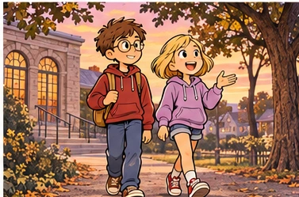
Jack sighed. “We looked this morning,” he said. “We looked the day before. And the day before that.”
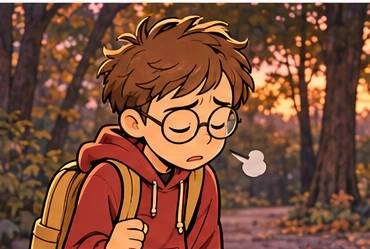
“Then you don’t have to come,” said Annie. “I’ll go look by myself.”
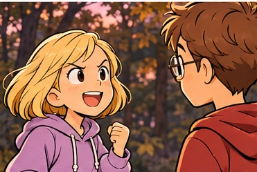
She took off into the woods.
“Annie, wait!” Jack called. “It’s almost dark! We have to get home!”
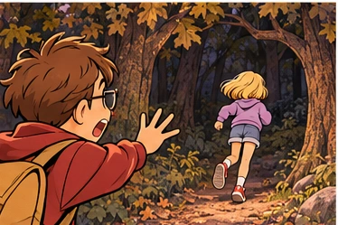
But Annie had disappeared among the trees.
Jack stared at the woods. He was starting to lose hope. Maybe he would never see Morgan again.
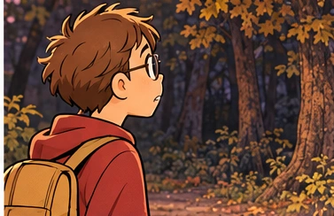
Weeks had passed. And there had not been one sign of Morgan le Fay. Nor had there been one sign of her magic tree house.
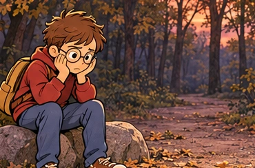
“Jack!” Annie called from the woods. “It’s back!”
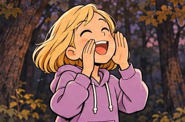
Oh, she’s just pretending as usual, Jack thought. But his heart started to race.
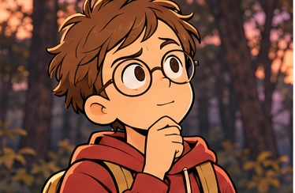
“Hurry!” called Annie.
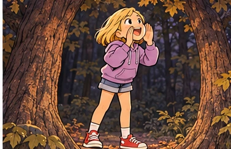
“She better not be kidding,” said Jack.
He took off into the woods to find Annie.
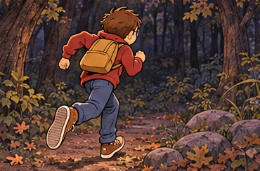
Night was falling fast. Crickets chirped loudly. It was hard to see through the shadows.
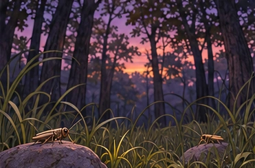
“Annie!” Jack shouted.
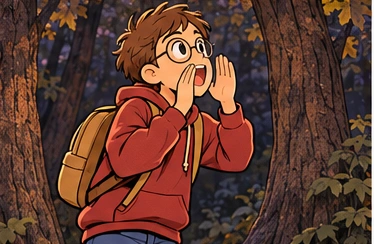
“Here!” she called.
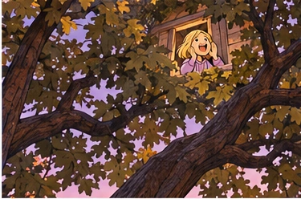
Jack kept walking. “Here where?” he called back.
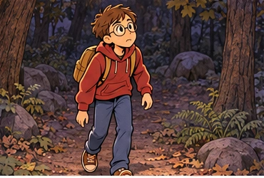
“Here here!”
Annie’s voice came from above.
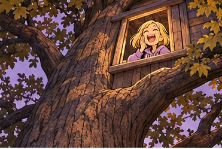
Jack looked up.
“Oh man,” he breathed.
Annie waved from the window of a tree house. It was in the tallest oak in the woods. A long rope ladder hung down from it.
The magic tree house was back.
“Come on up!” Annie shouted.
Jack ran to the rope ladder. He started climbing.
He climbed and climbed and climbed.
As he climbed, he looked out over the woods. High above the treetops it was still light.
At last, Jack pulled himself into the tree house.
Annie sat in the shadows. Books were scattered everywhere.
On the floor the letter M glowed in the dim light. The M stood for Morgan le Fay.
But there was no sign of Morgan herself.
“I wonder where Morgan is,” said Jack.
“Maybe she went to the library to get some more books,” said Annie.
“We were just at the library. We would have seen her,” said Jack. “Besides, the library’s closed now.”
Squeak!
A little mouse ran out from behind a stack of books. It ran to the M shining in the floor.
“Yikes,” said Annie.
The mouse sat on the middle of the M. It looked up at Jack and Annie.
“Oh, it’s so cute,” Annie said.
Jack had to admit the mouse was cute. It had brown-and-white fur and big dark eyes.
Annie slowly reached out her hand. The mouse didn’t move. Annie patted its tiny head.
“Hi, Peanut,” she said. “Can I call you Peanut?”
“Oh brother,” said Jack.
“Do you know where Morgan is?” Annie asked the mouse.
Squeak.
“You’re nuts, Annie,” said Jack. “Just because the mouse is in the tree house doesn’t mean it’s magic. It’s a plain old mouse that crawled in, that’s all.”
Jack looked around again. He saw a piece of paper on the floor.
“What’s that?” he said.
“What’s what?” asked Annie.
Jack went over and picked up the paper. There was writing on it.
“Oh man,” whispered Jack, after he read the words.
“What is it?” said Annie.
“A note,” said Jack. “It must be from Morgan. I think she’s in big trouble!”